기계정비기능사 (2004-07-18 기출문제)
1과목: 임의구분
1. 설비관리의 조직계획 중 설비관리의 분업방식으로 볼 수 없는 것은?
- 기능분업
- 전문기술 분업
- 경제적 분업
- 지역 분업
(정답률: 62%)

2. 1일 가동시간은 8시간이고 월 가동 일수는 20일인 경우 가동 중의 설비고장과 작업고장에 의한 설비 휴지시간이 1개월에 10시간이라면 실제 가동률은?
- 69.7%
- 83.8%
- 93.8%
- 98.5%
(정답률: 42%)
3. 와이어 로프의 끝부분을 풀어서 각 소선에 기름을 완전히 제거하고, 세척 후 소선을 각각 납칠한 후 와이어 로프 철부분부터 소켓에 넣어 당겨 와이어 로프 끝 부분이 소켓 안에 오게한 후 합금을 녹여 부어 체결하는 와이어 로프 조임 방법은?
- 압축 스토퍼 방식
- 쐐기 조임 방식
- 합금 조임 방식
- 크립의 조임 방식
(정답률: 85%)
4. 송풍기 임펠러의 흡입구에 의한 분류가 아닌 것은?
- 구름체 흡입형
- 편 흡입형
- 양 흡입형
- 양쪽 흐름 다단형
(정답률: 73%)
5. 생산활동에 있어서 작업의욕과 가장 관계되는 것은?
- 공정 관리
- 품질 관리
- 노무 관리
- 납기 관리
(정답률: 61%)
6. 기계의 고장을 줄이기 위하여 조정을 필요로 할 경우엔 조정을 해야하는데 구조적인 개선을 해야하는 경우는?
- 설비의 정밀도가 충분히 나타나지 않는 경우
- 기준면이 명확하지 않는 경우
- 치공구의 정밀도가 충분히 나타나고 있지 않는 경우
- 구조상 부득이한 경우
(정답률: 68%)
7. 단면도에서 아암, 리브, 핸들 등은 어느 단면을 사용 하는 것이 좋은가?
- 계단단면
- 회전단면
- 한쪽단면
- 온단면
(정답률: 84%)
8. 스케치할 때 원호로 된 모서리를 측정할 수 있는 것은 어느 것인가?
- R게이지
- 마이크로미터
- 피치 게이지
- 버어니어 캘리퍼스
(정답률: 93%)
9. 팔의 힘만을 이용하여 스패너로 볼트를 조일 때 적합한 볼트의 크기는?
- M6 이하
- M10까지
- M12 - M14
- M20 이상
(정답률: 65%)
10. 다음 그림은 크레인 신호 몸짓이다. 어떤 작업을 나타내는가?
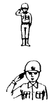
- 작업완료
- 작업정지
- 작업개시
- 작업급정지
(정답률: 80%)
11. 배관의 일부분을 인출하여 작도한 그림을 무엇이라 하는가?
- 평면배관도
- 입면배관도
- 부분조립도
- 입체배관도
(정답률: 73%)
12. 패킹,박판 등 얇은 재료의 단면표시 방법으로 옳은 것은?
- 한개의 가는 실선으로 나타낸다.
- 한개의 굵은 실선으로 나타낸다.
- 한개의 이점 쇄선으로 나타낸다.
- 한개의 파선으로 나타낸다.
(정답률: 74%)
13. 다음 중 유체의 유동방향을 표시하는 것은?
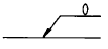
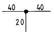
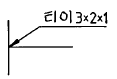
(정답률: 88%)
14. 다음 그림과 같은 원기둥의 체적을 구하는 식은?
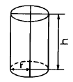
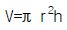
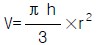
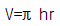
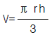
(정답률: 75%)
15. 스케치도를 작성시 적용되지 않는 것은?
- 스케치도 작성에 필요한 공구준비
- 정확한 치수측정 기능
- 스케치 용지
- 부품 가격표
(정답률: 93%)
16. 수명 특성곡선(Bathtub Curve)에서 고장률이 시간의 경과에 따라 감소하는 기간은?
- 마모 고장기
- 우발 고장기
- 피로 고장기
- 초기 고장기
(정답률: 56%)
17. 스케치도는 일반적으로 어떤 도법에 의해 그리는가?
- 회화법
- 제1각법
- 제3각법
- 투시도법
(정답률: 84%)
18. 다음 중 방사선 전개법으로 작도하는데 가장 적합한 물체는?
- 원기둥
- 원뿔
- 원통엘보
- 타원기둥
(정답률: 79%)
19. 압축공기 생산 계통에서 압축기와 연결되는 부속기기의 설명으로 올바른 것은?
- 드레인 장치는 저장탱크의 상부에 설치한다.
- 배관의 길이는 공진 범위 내에서 가급적 짧게 한다.
- 드라이어(dryer)와 필터(filter)는 압축기와 탱크사이에 설치한다.
- 2대의 압축기를 1개의 토출관을 이용하여 배관할 경우 체크밸브와 스톱밸브를 부착한다.
(정답률: 60%)
20. 설비의 고장률과 열화 패턴에서 초기 고장기에 대한 설명중 거리가 먼 것은?
- 이 기간에 고장률은 일정하다.
- 예방 보전이 필요 없는 기간이다.
- 비교적 높은 신뢰성을 가진 것만 남는다.
- 설계불량, 제작불량에 의한 약점이 이 기간에 나타난다.
(정답률: 61%)
2과목: 임의구분
21. 수리시간 단축을 위한 활동과 거리가 먼 것은?
- 고장진단의 연구
- 부품 교환방법의 연구
- 예비품 관리
- 수리할 때 오버홀 실시
(정답률: 83%)
22. 설비의 사용시간이 길어지고 시간이 흐름에 따라 자연적으로 발생하는 열화현상은?
- 장마로 인한 침수
- 피로로 인한 축의 파손
- 조작방법의 잘못으로 인한 온도 저하
- 열처리 불량으로 인한 마모
(정답률: 80%)
23. 다음 보기를 보고, 스케치의 작업순서가 옳은 것은?
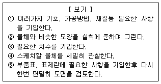
- ①→ ④→ ③→ ②→ ⑤
- ②→ ①→ ③→ ④→ ⑤
- ④→ ③→ ②→ ①→ ⑤
- ④→ ②→ ③→ ①→ ⑤
(정답률: 85%)
24. 3각법 배치도가 옳은 것은?
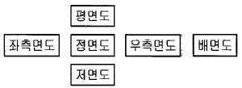
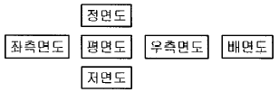
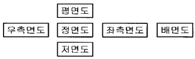
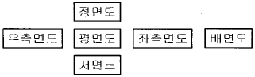
(정답률: 93%)
25. 기계 요소의 핀에 대한 설명이다. 틀린 것은?
- 기계 접촉면의 미끄럼 방지나 나사의 풀림 방지에 쓰인다.
- 위치 고정용으로 작용하는 힘이 비교적 작은 부분에 쓰인다.
- 핀의 종류에는 평행 핀, 테이퍼 핀, 슬롯 테이퍼 핀, 분할 핀 등이 있다.
- 결합용 기계 요소로서 큰 회전력을 전달하는데 쓰인다.
(정답률: 82%)
26. 원심펌프에서 임펠러의 양쪽에 작용하는 수압이 같지 않아 발생하는 추력을 줄여주기 위한 방법으로 적당한 것은?
- 흡입양정을 적게한다
- 임펠러의 직경을 증가 시킨다.
- 임펠러의 직경을 감소 시킨다.
- 임펠러에 밸런스홀을 뚫는다.
(정답률: 73%)
27. 큰 도면을 접어서 보관할 때 그 크기를 어느 사이즈로 접는가?
- A3
- A4
- B3
- B4
(정답률: 77%)
28. 다음 중 긴 쪽 방향으로 절단하여 도시하여도 되는 것은?
- 축
- 핀
- 볼트
- 풀리
(정답률: 80%)
29. 아래 그림과 같이 수나사 막대의 양 끝에 나사를 깎은 머리 없는 볼트로서 한 끝은 본체에 박고 다른 한끝에는 너트를 조여 사용하는 볼트는?
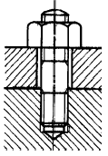
- 관통 볼트
- 스터드 볼트
- 탭 볼트
- 아이 볼트
(정답률: 82%)
30. 다음 중에서 파이프 속을 흐르는 유체가 가스임을 나타내는 것은?
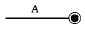
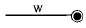
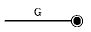
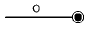
(정답률: 90%)
31. 압력을 나타내는 방법 중에서 양정의 단위는?
- 기압
- kg/cm2
- mmHg
- m
(정답률: 55%)
32. 송출압력이 50[㎏/㎝2],송출유량이 40[ℓ /min],회전수가 1000rpm인 유압펌프가 있다. 이때 소비동력이 4[KW]일 때 펌프의 전체효율은 얼마인가?
- 약 76%
- 약 82%
- 약 90%
- 약 97%
(정답률: 68%)
33. 유압장치내의 오일에 기포가 생기는 원인이 못되는 것은?
- 펌프축 주위의 시일마멸
- 폐입현상이 생길 때
- 오일의 양이 많을 때
- 오일라인에 움푹들어간 곳이 있을 때
(정답률: 81%)
34. 다음 중 릴리프 밸브를 나타내는 기호는?
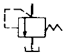
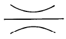
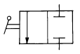
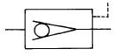
(정답률: 81%)
35. 저압의 피스톤 패킹에 사용되며, 피스톤에 볼트로 장착되어 저항이 다른 것에 비해 적은 것은?
- V형 패킹
- U형 패킹
- 컵형 패킹
- 플런저 패킹
(정답률: 70%)
36. 축압기의 기능이 될 수 없는 것은?
- 부하 관로의 기름 누설의 보상
- 온도 변화에 따른 기름의 용적 변화의 보상
- 쿠션 작용
- 유체의 축적
(정답률: 54%)
37. 회전차의 회전에 의하여 기체에 주어진 원심력을 이용하여 기체를 압송하는 기계는 어느 것인가?
- 원심 송풍기
- 회전식 압축기
- 축류 송풍기
- 왕복 압축기
(정답률: 80%)
38. 다음 그림은 어떠한 유압회로를 나타내는 것인가?
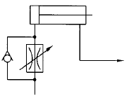
- 미터인(meter-in)회로
- 미터아웃(meter-out)회로
- 로킹(locking)회로
- 블리드 오프(bleed-off)회로
(정답률: 70%)
39. 유압펌프에 있어서 실제 송출압력을 P[Kg/cm2], 실제 송출량을 Q[cm3/sec]라 할 때 펌프동력Lp[ps]를 나타내는 식은?
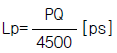
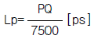
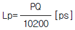
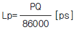
(정답률: 70%)
40. 다음의 밸브 명칭중 3가지는 같은 밸브를 나타낸다. 틀리는 기능의 밸브는?
- 역지변
- 개폐기
- 체크밸브
- 1방향밸브
(정답률: 68%)
3과목: 임의구분
41. 다음 그림은 축압기의 회로 기호이다. 기호 명칭은?
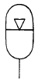
- 기체식 축압기
- 중량식 축압기
- 스프링식 축압기
- 보조가스 용기
(정답률: 78%)
42. 유압기계의 단점을 나열한 것 중 틀린 것은?
- 화재에 위험이 있다.
- 누설에 문제점이 많다.
- 배관이 어렵다.
- 온도에 영향을 받지 않는다.
(정답률: 89%)
43. 유압을 발생시키는 부분은?
- 유압펌프
- 유량밸브
- 유압모터
- 유압액츄에이터
(정답률: 72%)
44. 다음 중 공압제어 시스템에 속하지 않는 것은?
- 동력원
- 제어요소
- 작업요소
- 공기필터
(정답률: 64%)
45. 다음 그림은 어떤 유압회로를 나타내는가?
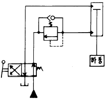
- 조화회로(자유낙하방지)
- 로킹회로
- 차동회로
- 증압회로
(정답률: 66%)
46. 공기압 유량제어 밸브 사용상의 주의점으로 틀린 것은?
- 유량제어 밸브는 되도록 제어대상에 멀리 설치하는 것이 제어성의 면에서 바람직하다.
- 공기압 실린더의 속도제어에는 공기의 압축성을 고려하여 미터아웃방식을 사용한다.
- 유량조절이 끝나면 고정용 나사를 꼭 고정 하는 것을 잊지 않도록 한다.
- 크기의 선정도 중요하다.
(정답률: 76%)
47. 압력에 대한 설명으로 맞는 것은?
- 압력은 단위 면적당 작용하는 힘을 말한다.
- 1표준기압은 735.5mmHg이다.
- 완전한 진공을 "0"으로 하여 측정한 압력을 게이지 압력이라 한다.
- 절대압력은 일반적으로 대기압을 말한다.
(정답률: 68%)
48. 유압회로의 구성요소가 아닌 것은?
- 압력계
- 소음기
- 유압펌프
- 액츄에이터
(정답률: 88%)
49. 다음 중 수공구 사용시 주의해야 할 사항이 아닌 것은?
- 본래의 용도이외는 절대로 사용하지 말 것
- 공구는 정리상자등을 이용하여 흩어지지 않도록할 것
- 결함이 있는 공구는 적당히 수리하여 사용할 것
- 공구의 특성에 따라 적절한 방법으로 사용할 것
(정답률: 88%)
50. 기계 사이의 통로 너비는?
- 50㎝ 이상
- 80㎝ 이상
- 100㎝ 이상
- 150㎝ 이상
(정답률: 58%)
51. 선반작업 도중 몸을 기대거나 발을 올려 놓으면 옷이 감기기 쉬운 곳은?
- 주축대
- 기어장치
- 왕복대
- 어미나사
(정답률: 84%)
52. 다음 중 와이어 로우프의 안전율을 계산하는 공식은? (단, S = 안전율, Q = 달기하중, n = 로우프의 가닥수 P = 로우프의 파단력)
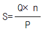
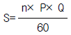
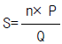
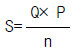
(정답률: 54%)
53. 유해 광선이 나오는 작업장에서 눈을 보호하기 위하여 사용되는 차광 안경을 착용해야 하는 작업은?
- 연기, 액체가 비산하는 작업
- 가스용접 절단작업, 반사광을 받는 작업
- 금속 비산물이 발생하는 작업
- 산, 알카리, 화학 약품이 비산하는 작업
(정답률: 93%)
54. 나이프 스위치의 충전부가 노출될 때 위험사항은 어느 것인가?
- 발화우려
- 착화우려
- 감전우려
- 누전우려
(정답률: 79%)
55. 전기장치의 화재는 어느 등급에 해당되는가?
- A급 화재
- B급 화재
- C급 화재
- D급 화재
(정답률: 87%)
56. 자극성 및 유해성 물질을 취급하는 장소에 비치하지 않아도 되는 것은?
- 경보장치
- 진공소제기
- 안전벨트
- 젖은 걸레
(정답률: 74%)
57. 다음 중 가죽제 앞치마를 사용하여야 하는 작업은?
- 목공작업
- 형삭작업
- 용접작업
- 밀링작업
(정답률: 88%)
58. 다음에서 안전 작업이 필요한 이유 중 관계가 먼 것은?
- 인명피해 예방
- 생산성 증가
- 산업설비 손실 증가
- 생산재 손실 감소
(정답률: 61%)
59. 사람이 들을 수 있는 가청 주파수의 범위는 얼마인가?
- 10 ∼ 10,000[Hz]
- 20 ∼ 20,000[Hz]
- 30 ∼ 30,000[Hz]
- 40 ∼ 40,000[Hz]
(정답률: 72%)
60. 감전 재해에 대한 고유한 특성이 아닌 것은?
- 눈에 보이지 않는다.
- 불구자가 될 가능성은 없다.
- 사망할 위험이 높다.
- 냄새가 없다.
(정답률: 90%)